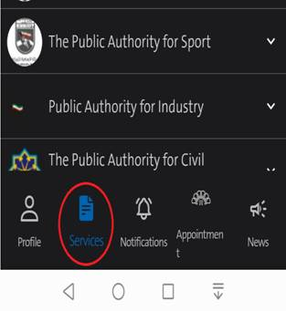
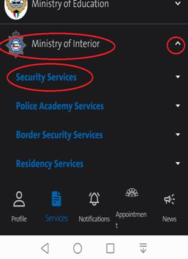
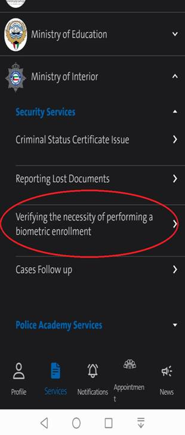
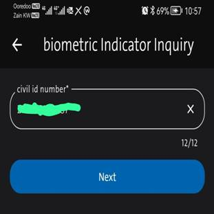
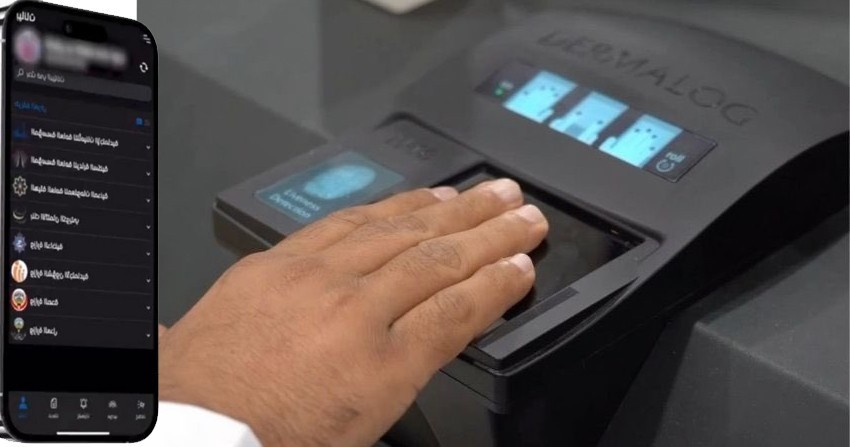

With reference to the biometric fingerprint update from ministry of interior (MOI), expats who didn’t do the biometric fingerprint are blocked from several services as below.
1- Bank transaction.
2- Travel outside the country.
3- Residency (renewal – transfer – extension).
4- All government processes.
To check your biometric fingerprint status please access the SAHAL mobile app and enter your CivilID number for verification,
Please follow these steps for biometric fingerprint check verification
1- Open the SAHAL all in your mobile (this service is not available in the web) English version.
2- After accessing the app below the screen click services option.

Look for Ministry of interior, click on the small arrow and select Security Services

Go for third selection Verifying the necessity of performing a biometric enrollment

Your CivilID number appeared on the selection click NEXT

It will show up in green icon for completing the biometric fingerprint and in red icon if need to do it.
To do appointment go to SAHAL app and book the appointment
